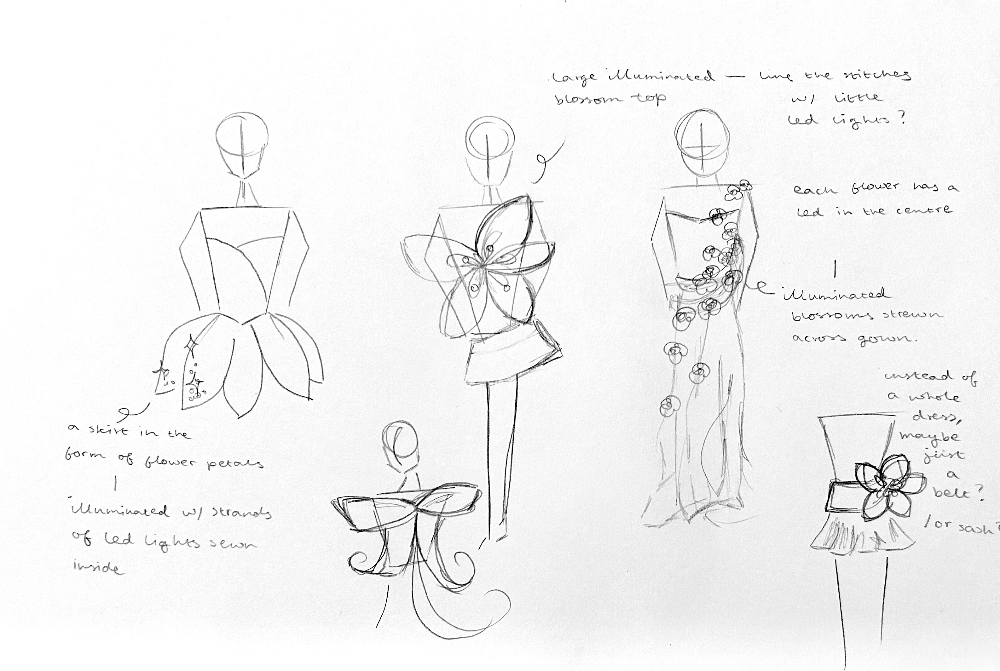

In week 9, I began to work on ideating and formulating my idea for the personal project!
I'm predominantly inspired by the use of light in physical computing and how it can be used to create a more interactive experience.
I'm interested in building upon what we've learnt from the LED blinking activity, and working with light at a larger scale.
I'm also interested in creating wearable art, chiefly inspired by Iris van Herpen's compelling haute couture.
I still need to workshop my ideas, and figure out how I want to highlight interaction.
But to begin, I've started by sketching some garment ideas. I've decided to continue working with botanical imagery, and I want
to create a garment with an illuminated blossom.
I also want to enhance the user experience and integrate an interactive element that responds
to the wearer, perhaps through movement. Ultimately, while everything is still very preliminary, I'm excited to explore the
possibilities of light and interactivity in congruity with fashion in my personal project.
INVESTIGATING THE COMPONENTS: CONDUCTIVE THREAD
Typically used in projects that require sewn circuits, conductive thread is a specialised thread designed to conduct electricity.
Conductive thread can carry currents and signals, similar to wire, but with the flexibility and drape of conventional sewing yarn.
The thread is typically made from materials like stainless steel, silver, or carbon nanotubes coated on a core fibre, and usually
used in wearable electronic projects.
REFLECTION
Reflecting on the physical computing workshops in weeks 7-9, I enjoyed learning about physical computing, and exploring it in practice in class!
I found the workshops were a great way to introduce us to the world of physical computing, and allowed us to explore and learn about
the Arduino, its different components and how they work together. I also enjoyed the hands-on aspect of the workshops, and how it
allowed us to develop our understanding and put what we've learnt into practice, through building circuits and integrating code.
Ultimately, being able to bridge the gap between the digital and the physical,
and interact with the tangible world was a fun and valuable experience.